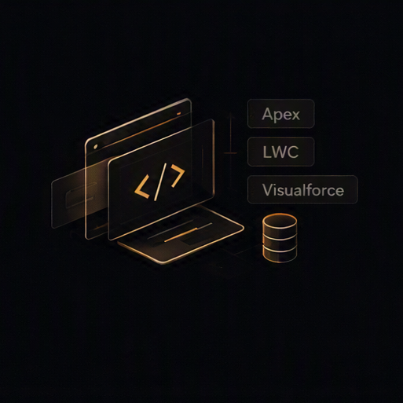
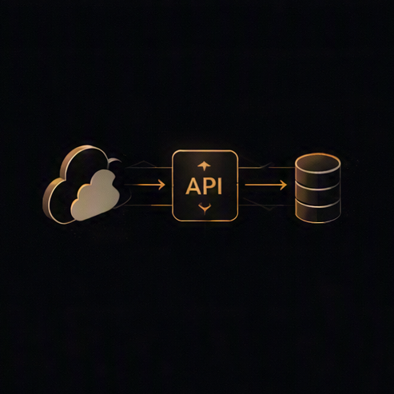

Build
- Apex
- Lightning Web Components
- Visualforce
- Triggers
- SOQL
- SOSL
Salesforce Developer · Accenture
Salesforce Developer
Building scalable Salesforce solutions across development, automation, integrations, security, and platform capabilities.
About
I am a Salesforce Developer at Accenture with three years of experience on US healthcare programs, including Kaiser Permanente and Blue Shield of California. I specialize in Apex, Lightning Web Components, OmniStudio, Flows, integrations, and platform security.
The work I take on spans architecture conversations, application development, UI modernization, automation, integrations, and production support. On selected initiatives I have owned technical delivery and provided technical guidance to a 10+ member team — including experienced Salesforce professionals — while remaining an individual contributor.
I approach problems by mapping dependencies first, then changing the smallest safe surface that still respects governor limits, security, and the existing org’s architecture.
Capabilities
The platform surface I use day to day — grouped the way delivery actually happens.
Practice
A high-level view of how I contribute on Salesforce — from technical planning through production — rather than a list of individual tickets.
Shaping the approach before the build: what to change, what it depends on, and how to explain that path to the people who need to agree.

Building and evolving Salesforce applications with custom code, UI, and data access that can live in a real org.
Moving interfaces forward — new Lightning experiences, stronger existing components, and security-aware UI work.
Encoding process in the platform so work happens through Flows, OmniStudio, and Apex rather than one-off manual steps.

Connecting Salesforce to other systems and keeping the data that moves between them trustworthy.
Keeping the org usable after go-live: configuration, access, data integrity, troubleshooting, and release support.
Responsibility
Three years of Salesforce development, with selected deliveries where the work went further — technical ownership, guidance, and production support — without a people-management title.
Owned technical delivery of selected initiatives and led specific technical deliveries through implementation and release.
Provided technical guidance and implementation support to a 10+ member team, including experienced Salesforce professionals.
Contributed to technical approaches and implementation planning, including presenting approaches in client conversations.
Supported complex technical implementations, resolved critical production issues, and helped land major releases.
Professional journey
Company
Salesforce Developer · Chennai, India
Associate Developer → Analyst Developer
Client - II
Jan 2025 – Present
US healthcare Salesforce delivery
Client - I
Nov 2023 – Jan 2025
US healthcare Salesforce delivery
Proof of depth
Six credentials are listed with issue dates and IDs. The seventh card is a placeholder so the 7x certified claim can be completed when the remaining file and details are added.
Tech stack
Education
Bachelor of Technology
Prasad V Potluri Siddhartha Engineering College
2019 – 2023 · Vijayawada
84.8%
Intermediate
Narayana Junior College
2017 – 2019 · Vijayawada
94%
SSC
Bala Vignan Public School
2016 – 2017 · Vijayawada
93%